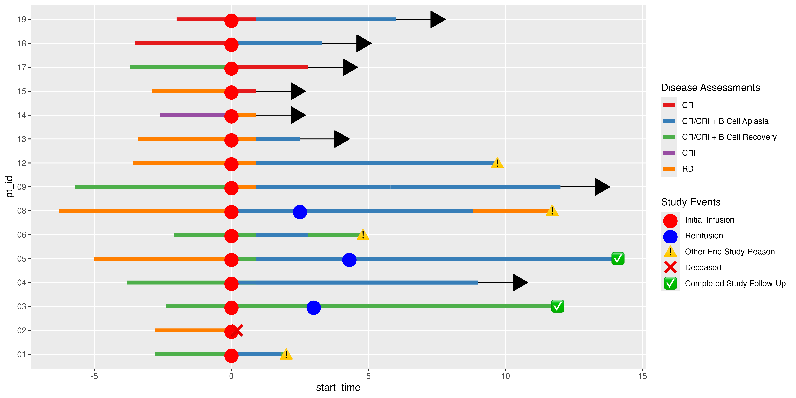

The ggswim package provides a convenient set of commands to easily create swimmer plots. It integrates with the familiar ggplot2 framework and streamlines the process of generating legends that effectively communicate events of interest along individual subject trajectories.
Installation
You can install the development version of ggswim like so:
devtools::install_github("CHOP-CGTInformatics/ggswim")Usage
To help you get started, ggswim includes three sample datasets: patient_data, infusion_events, and end_study_events. These de-identified datasets simulate real world data related to infusions, disease assessments, and study statuses for a clinical trial.
By first calling the ggswim() function, we can set up the horizontal survival bars of our swimmer plot, i.e. the “lanes:”
library(ggswim)
library(ggplot2)
p <- ggswim(
patient_data,
mapping = aes(x = delta_t0_months, y = pt_id, fill = disease_assessment),
arrow = arrow_status,
arrow_head_length = unit(.25, "inches"),
arrow_neck_length = delta_today,
width = 0.25
)Next we’ll add on events of interest: end of study updates, and infusions. These we’ll refer to as “markers”:
p <- p +
add_marker(
data = end_study_events |> dplyr::rename("Status Markers" = end_study_name),
aes(x = delta_t0_months, y = pt_id, label_vals = end_study_label, label_names = `Status Markers`),
label.size = NA, fill = NA, size = 5
) +
add_marker(
data = infusion_events,
aes(x = delta_t0_months, y = pt_id, name = "Infusion"), color = "#25DA6D",
size = 5, position = "identity", alpha = .75
)
#> Warning: Duplicated aesthetics after name standardisation: colourFinally, we’ll beautify the plot with familiar ggplot2 techniques and a last finishing touch with theme_ggswim():
p +
scale_fill_manual(
name = "Overall Disease Assessment",
values = c("#6394F3", "#F3C363", "#EB792F")
) +
labs(title = "My Swimmer Plot") +
xlab("Time Since Infusion (Months)") + ylab("Patient ID") +
theme_ggswim()
Collaboration
We invite you to give feedback and collaborate with us! If you are familiar with GitHub and R packages, please feel free to submit a pull request. Please do let us know if ggswim fails for whatever reason with your database and submit a bug report by creating a GitHub issue.
Please note that this project is released with a Contributor Code of Conduct. By participating you agree to abide by its terms.